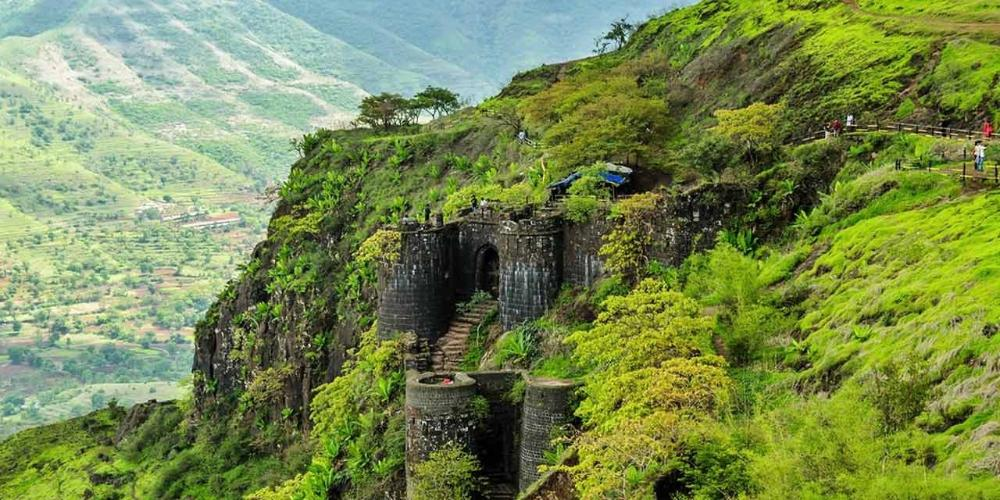
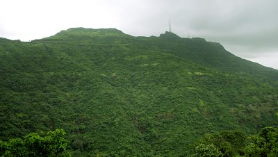
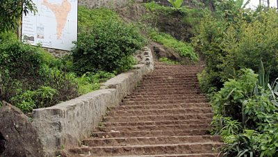

The Sinhagad Fort is approximately 25 km away from Pune, an ideal place for trekking. It is 1312 meters above sea level, and it is still stunning, unclear when it was constructed. The Battle of Sinhagad 1670, a critical war, was fought here. Apart from that, the fort has glimpsed multiple battles through the centuriesSinhagad, literally means Lion’s Fort, is about 30 kilometres southwest of Pune. It was previously called Kondana and was also important because of its strategic location, perched on an isolated cliff in the Bhuleswar range of the Sahyadri Mountains, 1,312 meters above sea level. The fort is ‘naturally’ protected due to its very steep slopes. Walls and bastions were constructed at only key places. A good motorable road leads right up to the top of the fort. Apart from the excellent views of the city and the Sahaydri Mountains, the fort is also a popular hangout because of the vendors who sell a local delicacy called ‘pithlabhakari’ and curds. On a clear day one gets to see the forts of Torna, Rajgad and Purandar from Sinhagad Fort.One of the most famous battles on Sinhgad was fought by Tanaji Malusare, a general of Chhatrapati Shivaji of the Maratha Empire in order to recapture the fort in March 1670A steep cliff leading to the fort was scaled in the dead of the night with the help of a tamed monitor lizard named "Yashwanti", colloquially known as a ghorpad. Thereafter, a fierce battle ensued between Tanaji and his men versus the Mughal army headed by Udaybhan Singh Rathod. Tanaji Malusare lost his life. There is an anecdote that upon hearing of Tanaji's death, Chhatrapati Shivaji expressed his remorse with the words, "Gad aala, pan Sinha gela" - "The Fort is captured, but the Lion is lost" and so the name Sinhagad.A bust of Tanaji Malusare was constructed on the Fort in memory of his fierce resistance of the Mughal forces in the battle.


